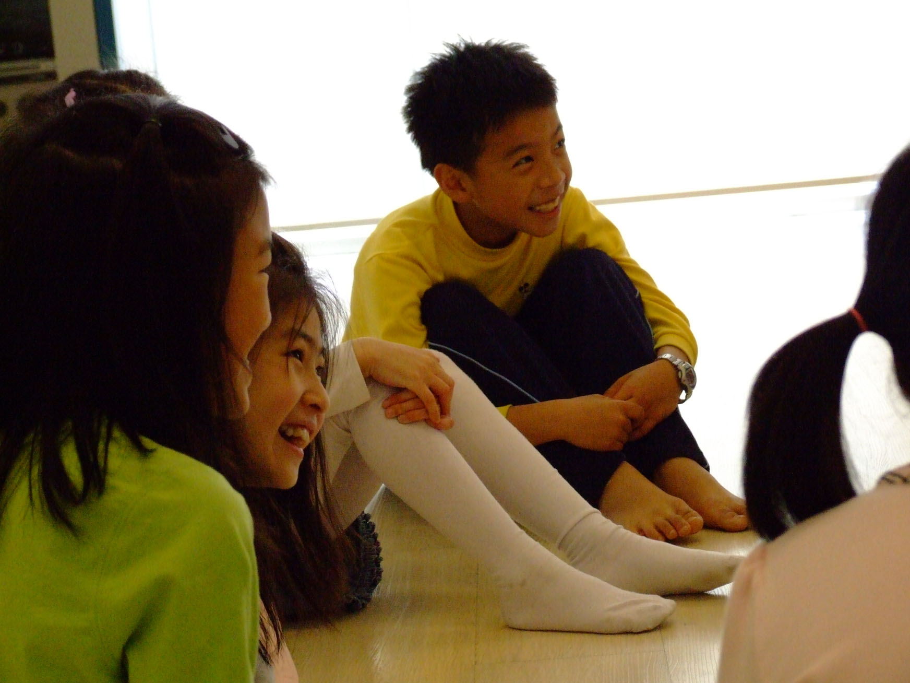
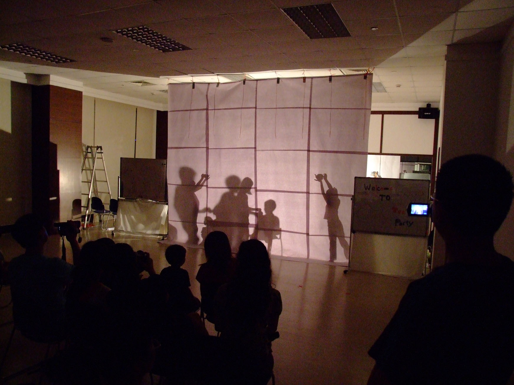
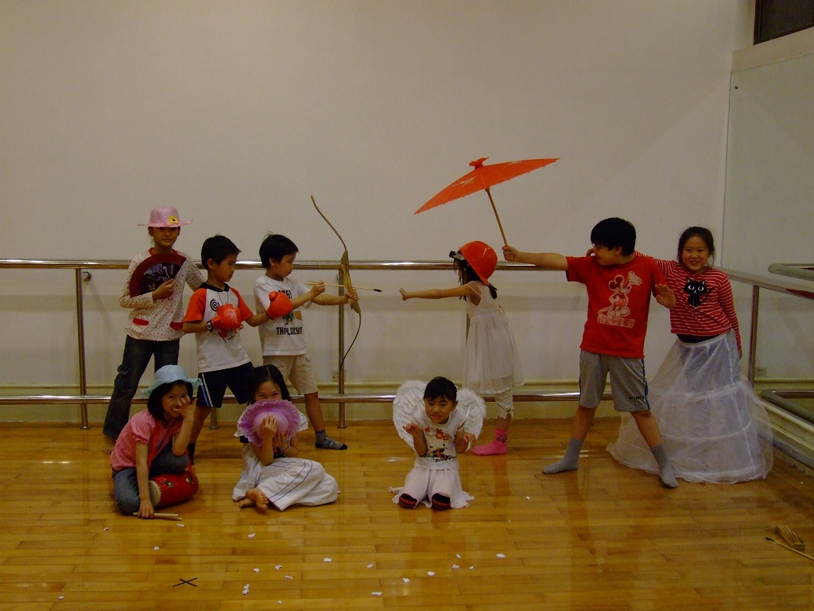
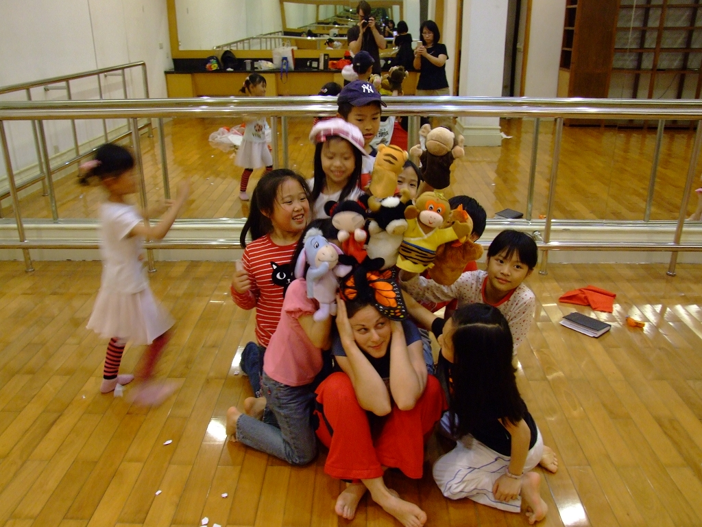
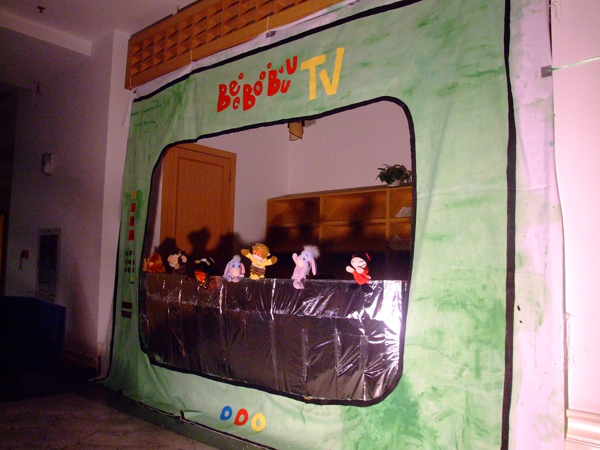
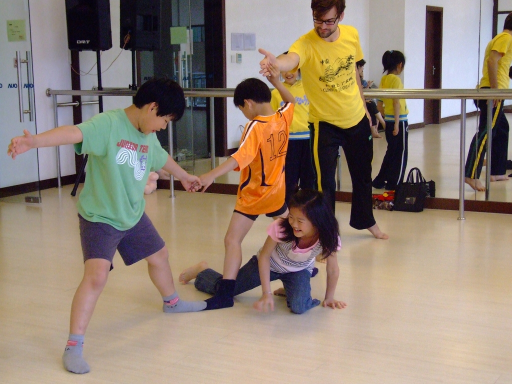
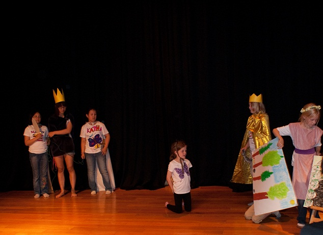

BeeeBoooBuuu- dečija pozorišna radionica
>> Detalji
>> Galerija slika sa prethodnih radionica
>> Često postavljena pitanja
BeeeBoooBuuu su u oktobru 2008. godine osnovali Sanja Cekov i Henning Otte sa ciljem da stvore multikulturalnu platformu za dečije stvaralaštvo. Do kraja 2011. radionica je bila držana u okviru ekspatske zajednice Sudžoa i Šangaja. Deca iz Kine, Tajvana, Malezije, SAD, Nemačke, Brazila, Koreje, Čilea i Norveške učestvovala su u BeeeBoooBuuu radionici i otkrivala magični svet teatra stvarajući zajedno.
Krajem 2012. godine radionica je preseljena u Berlin, pod vođstvom Sanje Cekov.
Više o radionici:
 BeeeBoooBuuu je serija multidisciplinarnih pozorišnih radionica za decu. Naše radionice pružaju mogućnost deci da istražuju scenske umetnosti, izgrade veštine sporazumevanja i samopoštvovanje, kao i da razviju svoju maštu i kreativnost.
BeeeBoooBuuu je serija multidisciplinarnih pozorišnih radionica za decu. Naše radionice pružaju mogućnost deci da istražuju scenske umetnosti, izgrade veštine sporazumevanja i samopoštvovanje, kao i da razviju svoju maštu i kreativnost.
Deca vole da istražuju svet oko sebe i imaju urođenu potrebu da imitiraju ljude i stvari koje ih okružuju, što itekako odražava njihovu uobrazilju. Budući da je slobodna upotreba mašte od ključnog značaja za uživanje i uspeh na sceni (a i u svakodnevnom životu) naše radionice su usmerene ka podsticaju dečije kreativnosti. Kroz raznorazne pozorišne tehnike (lutke, senke, ples...), igre (improvizacija, kreativno razmišljanje...) i vežbe (zagrevanje, koncentracija, timski rad...) deca uče kako da “otvore” svoju maštu i kreativnost, i što je još važnije, kako da ih usmere i oblikuju u kreativnu tvorevinu poput komada, priče, plesa, kostima i sl. Deca su ohrabrena da eksperimentišu sa glasom, pokretom, šminkom, tekstom i sl. i nađu najbolji način da izraze svoje ideje.
Naše pozorišne radionice pomažu deci, ne samo da usavrše stvaralački proces, već i da izgrade samopouzdanje i kolektivni duh. Sam čin stvaranja dela i njegovog izvođenja pred publikom je od velikog značaja za dete koje kroz njega uči da veruje i poštuje sebe. Sa druge strane, rad sa voditeljem radionice i drugom decom, doprinosi da dete pomaže drugima, uspostavlja poverenje i gradi poštovanje ka njima. U opuštenoj i razigranoj atmosferi deca uče kako da slobodno komuniciraju međusobno, izraze svoje ideje, slušaju druge, prihvataju njihove ideje i stvaraju skupa.
Neke od njavažnijih tehnika i vežbi zastupljenih u našim radionicama su:
- LUTKE:
- Deca uče ne samo da prave svoje lutke ili da koriste već napravljene, već i da animiraju sopstvene ruke, prste, stopala ili različite predmete kako bi im dala ljudske osobine i odigrala priču.
- KREATIVNI POKRET:
- Deca uče da reči nisu jedini način da nešto “kažu” na sceni i uče kako da se izraze kroz pokret.
- PLES:
- Deca uče kratke koreografije i raznorazne vrste plesa i uče kako da inkorporiraju plesne korake i pokrete u postojeću priču/ dijalog/ scenu.
- KREATIVNO PRIPOVEDANJE:
- Deca uče kako da na osnovu priče, pesme, fotografije, objekts i sl. stvaraju mini pozorišne komade.
- IMPROVIZACIJA:
- Kroz igre i vežbe impovizacije deca uče kako da stvaraju originalne scene.
- TEHNIČKE RADIONICE:
- Deca uče kako da prave maske, kostime, dekor i scensku šminku.
- VEŽBE GLASA:
- Deca uče kako da oslobode svoj glas i izgrade originalne likove i scene.
Detalji:
- Broj učesnika: 5-12 po radionici
- Uzrast: 6-10, 11-14, 15-19
- Jezik: srpski / engleski/ nemački
Svaki ciklus radionica se završava javnom prezentacijom ili predstavom.
Ne zaboravite da ponesete udobnu odeću.
Za više informacija kontaktirajte nas putem mejla: sparkssticksstrings@gmail.com ili telefonom: 01525 211 3463
Galerija slika sa prethodnih radionica:












Često postavljena pitanja:
- 1. Šta znači BeeeBoooBuuu?
Reči imaju organičeno značenje, stoga smo želeli da ime naše radionice bude zvuk. BeeeBoooBuuu može značiti štagod vam je srcu drago i možete ga izgovarati onako kako želite..
- 2. Koliko vremena je potrebno da se deca prilagode?
Uglavnom, već posle prve igrice deca se u BBB radionici osećaju kao na svom terenu.
- 3. Da li je roditeljima dozvoljeno da budu prisutni na radionici?
Mi nemamo ništa potiv toga da roditelji povremeno budu prisutni, sve dok to ne remeti decu. Svakako, mi savetujemo roditeljima, posebno onima koji imaju stidljivo dete, da to ipak ne čine tokom prve radionice kako bi se dete brže povezalo sa grupom i počelo samostalno da dela. Takođe, povremeno održavamo radionice za decu i roditelje.
- 4. Po čemu se BBB razlikuje?
Mi stojimo iza toga da se tajna pozorišne magije ne može iskusiti oblačenjem skupih kostima ili pukim učenjem tekstova napamet i čvrsto verujemo u moć mašte koja “manje” pretvara u “više”. Kostime i scenografiju koju možete videti na našoj pozornici dizajniraju i prave sama deca uz našu pomoć. Takođe, tekst koji koristimo u radionici ili prezentaciji su napisala sama deca. Zajedno sa njima mi stvaramo naše zaplete, dijaloge i likove koji mogu da poteknu iz neke poznate priče ili pesme, nekog objekta, sećanja i sl.
Ono što odlikuje BBB, jeste da mi zajedno sa decom otvaramo riznicu teatra, inspirišemo decu da se igraju draguljima koje tu nađu i učimo ih kako mogu da ih koriste u ostalim sferama života.
- 5. Da li je BeeeBoooBuuu radionica otvorena za saradnju sa drugim institucijama i organizacijama?
Naša radionica je već uspoešno sarađivala sa Nemačkom školom Šangaj i mi se radujemo saradnji sa bilo kojom institucijom, grupom ili individuom čije sfere interesovanja i delovanja su pozorište, kreativnost, obrazovanje, deca i mladi.
- 6. Zašto nemate radionice za decu uzrasta manjeg od 6 godina?
Mi u šali volimo da kažemo da su mala deca kao sunđerčići koji prosto upijaju sve oko sebe. Sa druge strane, deca uzrasta od sedam i više godina, imaju potrebu da sama urade ili pokažu nešto. Cilj BeeeBoooBuuu radionice je učenje dece kako da usmere svoju kreativnost i oblikuju svoje ideje u nešto što može biti prikazano na sceni, a deca mlađa od šest godina jednostavno nisu dovoljno samostalna da krenu ka tom cilju.
- 7. Koji jezik se koristi u radionici?
Budući da su u našoj radionici učestvovala deca sa različitih meridijana, engleski jezik se prirodno nametnuo kao radni jezik BeeeBoooBuuu radionice. Sa druge strane, kulturna i jezička raznolikost koja krasi našu radionicu nas uvek inspiriše, pa se dešava da razni jezici postanu deo naše pozorišne igre. U prilikama kada sva deca dolaze iz istog jezičkog okruženja (što je bio slučaj u Nemačkoj školi Šangaj kada je radionica držana na nemačkom jeziku) mi nudimo mogućnost držanja radinice na drugim jezicima (srpski, nemački, kineski).
- 8. Koliko traje jedna radionica?
Jedan ciklus radionica se obično sastoji od sedam pojedinačnih radionica i završne prezentacije (7-8 nedelja), ali broj radionica u ciklusu može da varira. Jedna pojedinačna radionica traje 90 minuta, ali može da traje i duže npr. kada spremamo završnu prezentaciju ili predstavu i potrebno nam više vremena za probu. Nakon završetka svakog ciklusa, počinje novi napredniji ciklus tokom koga deca uče nove pozorišne tehnike.
- 9. Zašto je broj polaznika ograničen na dvanaest?
Naša pozorišna radionica je usmerena kao razvijanju talenata svakog deteta ponaosob. Mi verujemo da je teatar mnogo više od imitacije, zato nikada ne tražimo od dece da ponavljaju naše gestove i pokrete, već ih ohrabrujemo da prikažu svoje ideje, priče i sl. Takođe, mi polažemo značaj na timski rad i često delimo decu u grupe, dajemo im zadatke, posmatramo ih dok stvaraju, pomažemo im i usmeravamo ih savetima, što sve skupa zahteva našu punu pažnju. Veći broj dece smanjuje našu mogućnost da se posvetimo svakom detetu, a poslednje što želimo je da zapostavimo nekog ili nečiju dobru ideju zato što nemamo dovoljno vremena ili prostora.
U slučaju kada radimo sa tinejdžerima ili mladima, moguće je imati veći broj polaznika, ne samo zato što je njihov period koncentracije duži, već zato što su oni samostalniji u procesu stvaranja i jedni drugima daju povratne informacije.
Veliko hvala Joy Hung bez čije podrške ne bismo stali na svoje noge!